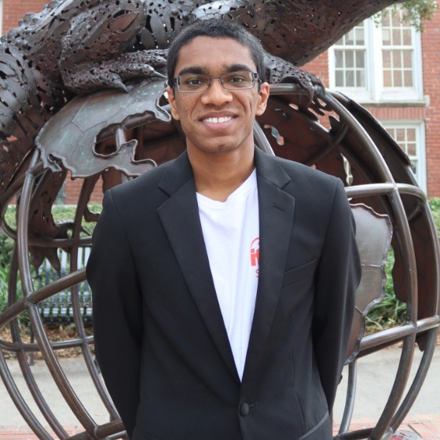

Computer Science + Linguistics
University of Florida
My name is Kailash Shankar, and I am a student at the University of Florida, pursuing a dual degree in Computer Science and Linguistics. With a passion for technology and language, I aim to bridge the gap between these fields, exploring how computational methods can enhance linguistic research and applications.
Experiences
Cape Town, South Africa
Housing Assembly
As a SWE intern at EDU Africa, I was tasked with partnering with the local organization Housing Assembly, who advocates for better housing conditions and regulation, to create an interactive mapping platform allowing residents in impoverished informal settlements to gain access to emergency services, contact to local government officials, and a platform to report local issues in their settlement, such as crime, water or power supply shortages, and forced home evictions. This platform also served as a way for Housing Assembly to advocate for better Housing conditions, and to show concrete evidence of all the issues that residents face in these settlements, so that they can push for change, and the housing crisis currently plauging Cape Town and all of South Africa can be brought to an end. In addition to improving my software development skills, building this software platform required me to work closely with the client throughout all stages of development to make sure the final product would be best suited for their needs, as well as requiring me to prioritize an intuitive, easy-to-use UI as the target audience for the platform had a low level of education and rudimentary tech literacy.
Key Points: